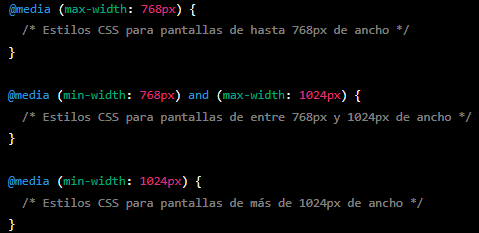
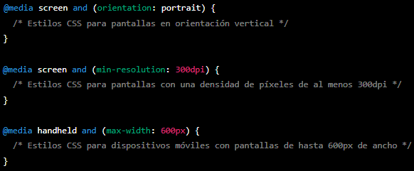

Media Queries
Que es
Las media queries son una técnica de diseño web que permite adaptar el contenido de un sitio web a diferentes dispositivos y tamaños de pantalla.
En resumen, las media queries permiten definir diferentes reglas de estilo CSS para diferentes tamaños de pantalla, lo que permite que el contenido se vea óptimo en cualquier dispositivo.
Como funciona
Las media queries funcionan utilizando una serie de condiciones que se aplican a diferentes anchuras de pantalla. Estas condiciones pueden ser específicas para diferentes tipos de dispositivos,
como teléfonos móviles, tabletas y ordenadores de escritorio.
Como se puede aplicar
Para aplicar media queries en un sitio web, se utilizan reglas CSS con una sintaxis específica. Estas reglas se aplican utilizando el atributo "media" y una serie de parámetros que especifican
las condiciones de visualización. Por ejemplo:

En este ejemplo, se utilizan tres media queries para definir diferentes reglas de estilo para tres tamaños de pantalla diferentes. La primera media query aplica estilos CSS para pantallas de hasta
768px de ancho, la segunda aplica estilos para pantallas de entre 768px y 1024px de ancho, y la tercera aplica estilos para pantallas de más de 1024px de ancho.
Las media queries también pueden utilizarse para especificar otros parámetros, como la orientación de la pantalla, la densidad de píxeles o el tipo de dispositivo. Por ejemplo:

En resumen, las media queries son una técnica fundamental para el diseño web adaptable, que permite a los desarrolladores web crear sitios web que se adapten a diferentes tamaños y tipos de pantalla.
Al utilizar las media queries, se pueden crear diseños flexibles y fluidos que se vean bien en cualquier dispositivo, lo que mejora la experiencia del usuario y la accesibilidad del sitio web.